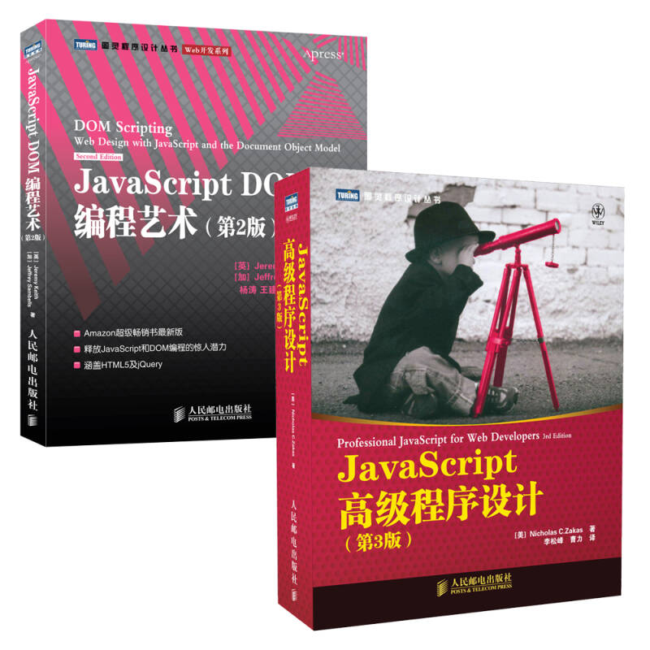
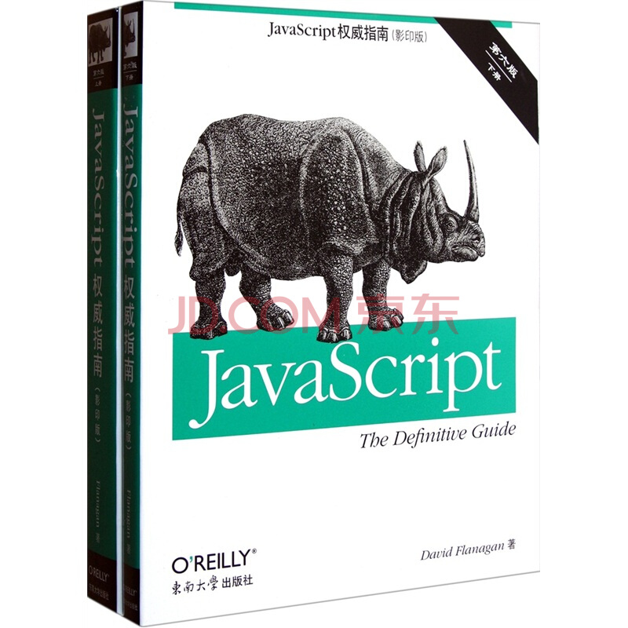

html与css
一，html+css基础
1-1
Html和CSS的关系
学习web前端开发基础技术需要掌握：HTML、CSS、JavaScript语言。下面我们就来了解下这三门技术都是用来实现什么的：
1. HTML是网页内容的载体。内容就是网页制作者放在页面上想要让用户浏览的信息，可以包含文字、图片、视频等。
2. CSS样式是表现。就像网页的外衣。比如，标题字体、颜色变化，或为标题加入背景图片、边框等。所有这些用来改变内容外观的东西称之为表现。
3. JavaScript是用来实现网页上的特效效果。如：鼠标滑过弹出下拉菜单。或鼠标滑过表格的背景颜色改变。还有焦点新闻（新闻图片）的轮换。可以这么理解，有动画的，有交互的一般都是用JavaScript来实现的。
1-2
1， HTML标签不区分大小写，
<h1>和<H1></H1>是一样的，但建议小写，因为大部分程序员都以小写为准。
1-3
一个HTML文件是有自己固定的结构的。
<html>
<head>...</head>
<body>...</body>
</html>
代码讲解：
1.
<html></html>称为根标签，所有的网页标签都在
<html></html>中。
2.
<head>标签用于定义文档的头部，它是所有头部元素的容器。头部元素有
<title>、<script>、 <style>、<link>、 <meta>等标签，头部标签在下一小节中会有详细介绍。
3. 在
<body>和
</body>标签之间的内容是网页的主要内容，如
<h1>、<p>、<a>、<img>等网页内容标签，在这里的标签中的内容会在浏览器中显示出来。
1-4
1，下面这些标签可用在 head 部分：
<head>
<title>...</title>
<meta>
<link>
<style>...</style>
<script>...</script>
2，代码注释不仅方便程序员自己回忆起以前代码的用途，还可以帮助其他程序员很快的读懂你的程序的功能，方便多人合作开发网页代码。
语法：
3，CSS注释代码
就像在Html的注释一样，在CSS中也有注释语句：用/*注释语句*/来标明（Html中使用)
1-5
1，语义化：说的通俗点就是：明白每个标签的用途（在什么情况下我可以使用这个标签才合理）比如，网页上的文章的标题就得用标题标签，网页上的各个栏目的栏目名称也可以使用标题标签。
2，语义化的作用
1）. 更容易被搜索引擎收录。
2）. 更容易让屏幕阅读器读出网页内容。
参考用书:
 
内容来自:https://blog.csdn.net/wangluojisuan/article/details/6927474